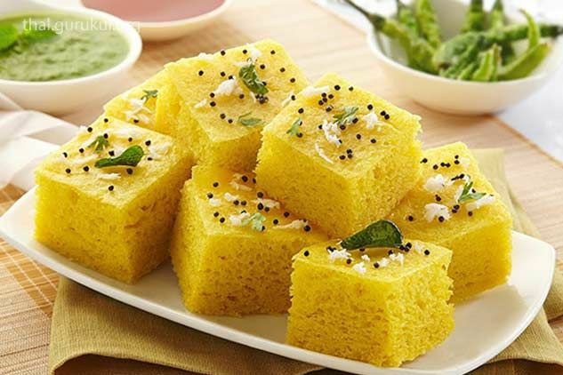

Dhokla Recipe..
A soft and spongy Gujarati snack.
Preparation Time
- Prep: 30 minutes
- Cook: 30 minutes
Ingredients
- 1 cup besan (gram flour)
- 1 teaspoon cumin seeds
- 1/2 teaspoon turmeric powder
- 1/2 teaspoon red chili powder
- 1/4 teaspoon asafoetida
- 1 tablespoon sugar
- 1 teaspoon lemon juice
- 1 cup water
- 1 teaspoon baking soda
- Oil for greasing
For the Tempering:
- 1 teaspoon mustard seeds
- 1 teaspoon cumin seeds
- 1 green chili, slit
- A pinch of asafoetida
- 2 tablespoons oil
Instructions
- Make the Batter: In a bowl, mix besan, cumin seeds, turmeric powder, red chili powder, asafoetida, sugar, lemon juice, and water to form a smooth batter.
- Steam the Dhokla: Grease a steamer plate with oil. Pour the batter onto the plate and steam for 20-25 minutes, or until cooked through.
- Prepare the Tempering: Heat oil in a small pan. Add mustard seeds, cumin seeds, green chili, and asafoetida. Let them splutter.
- Assemble the Dhokla: Cut the steamed dhokla into squares. Pour the tempering over the dhokla.
Nutrition
| Calories | 150 kcal per serving |
|---|
| Protein | 8g |
|---|
| Carbs | 20g |
|---|
| Fat | 5g |
|---|